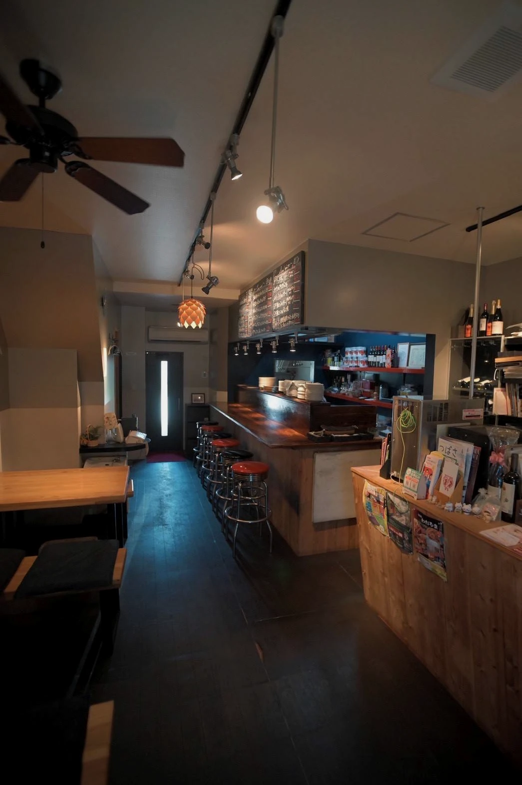
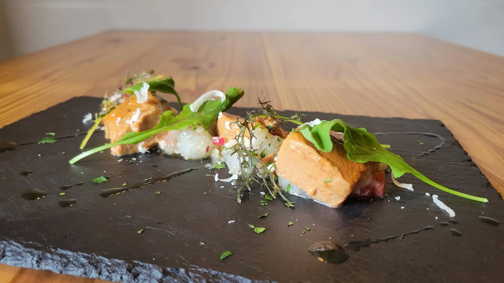

パスタ 100g
サラダ / 前菜盛り合わせ / バケット / ソフトドリンク

MENU BOOK

サラダ / 前菜盛り合わせ / バケット / ソフトドリンク
サラダ / バケット / ソフトドリンク / デザート

シンプルなトッピングで、ピアディーナの生地が味わえるおすすめの食べ方。

豚ヒレカツが入った、食べ応えのある一品。

油でカリッと揚げたイワシのフリットとオニオン。

自家製ソーセージ。アクセントにマスタード。

シェフがお届けするスペシャルランチコース
お一人様 ¥3,500 （税込）※ 写真はイメージです。
※ 仕入れ状況によって内容が変わることがあります。ご了承ください。
グラス ¥500ボトル ¥2,500
グラス ¥600ボトル ¥3,500
グラス ¥700ボトル ¥4,500
グラス ¥600ボトル ¥3,000
グラス ¥500ボトル ¥2,500
グラス ¥600ボトル ¥3,000
グラス ¥800ボトル ¥5,000
最新情報は店頭またはInstagramをご確認ください。